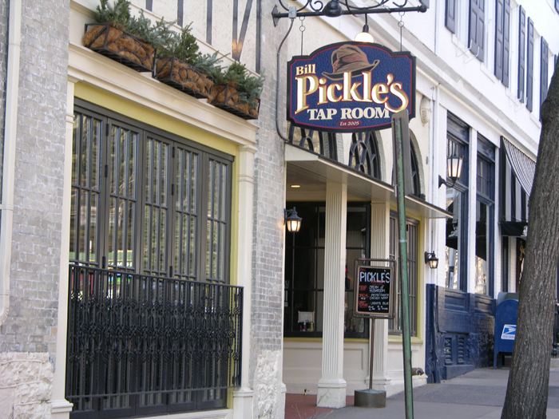
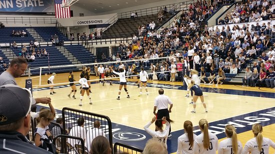
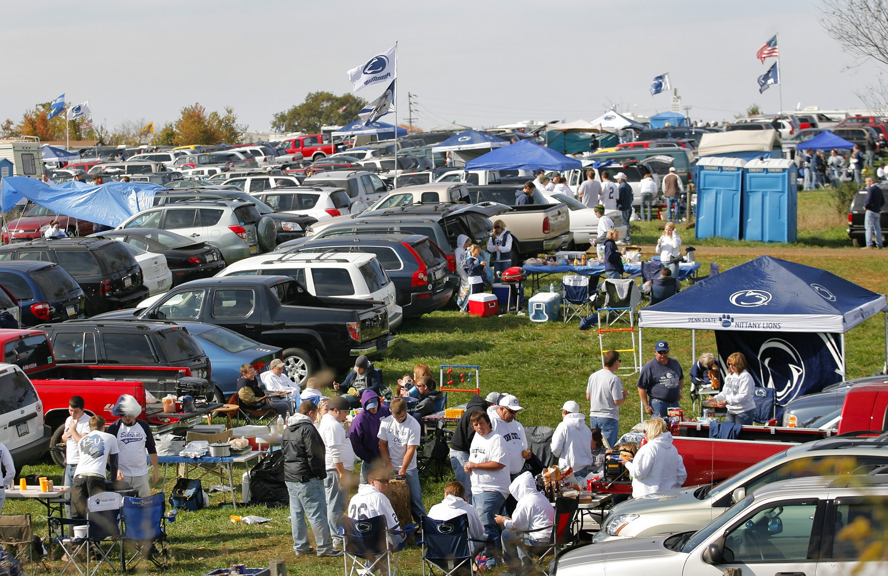

Current Weather
Ideas Input
About
The goal of the Penn State Exploration Guide is to help anyone visiting or living in the State College area to find things that they like to do in the area. We know that their are a large variety of tastes and preferences, so we have broken up our ideas into different groups. This way no matter who you are or what you are interested in, our site should be able to help you find something you like in the State College area. Our categories are Adventure, Elderly, Adult, Family, Student, and Seasonal but feel free to look through any category as many activities are enjoyable for people of all kinds!
Helpful Links
State College Weather Forecast
Penn State Football Schedule
Bryce Jordan Center Schedule
Student Tours
State Theatre Website
Berkey Creamery
Palmer Museum of Art
Non-Student Football Information
Buying Freshman Football Tickets
THON Website
Arts Festival
Football Tailgating
Basketball
Nature Inn
Penn Cave
Creamery
Map of Penn State
Parking Garages at PSU
Downtown Destinations
Pickles is a great bar downtown in State College right on S Allen Street. They have events every night of the week, such as the classic Tuesday Country Night and Wednesday Trivia Night. If you're around on the weekend, Friday and Saturday night have live music. Aside from Activities it's a great place to grab some food. Visit their website for more info.
Game Day Ideas
Penn State isn't only a football school, there are plenty of other sports with very affordable prices or free tickets! From volleyball, to wrestling, fencing, and swimming, there's bound to be some sporting event planned during your visit. Visit their website for more info.
Campus Attractions
If you're around for a football game, there's nothing more fun than to spend the day getting excited by sitting outside tailgaiting with friends and family. With lots of space around the football stadium there's plenty of people to keep it interesting! If you don't know anyone who tailgaits, you can always purchase a pass and get ready for the season.
Nearby Options

Tussey Mountain is a quick drive away from downtown State College, located in Baulsburg. They have a bunch of fun activities possible such as skiing, sledding, go karting, and more! During the summer they even have a wing fest and outdoor movies. You can visit Tussey for a day, take lessens join the youth race program, take a group there for events, and even join Ski Patrol. For more information their contact information is 301 BEAR MEADOWS ROAD, BOALSBURG, PA, 16827 or their website.